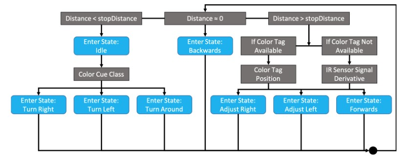

labyrinth Navigating Robot
It just wants to go home
Background
This was also a project for Mechatronics with Dr. Jeremy Brown. The goal of the project was to make a robot that could navigate its way through a maze correctly without getting lost or crashing into walls.
The maze was set up in such a way that each wall would have a colored post-it that signified which direction the robot would have to go. The robot would have to go left, right, or turn around. It was not allowed to crash into walls and it couldn't skip any post its. The maze would be set the day of so that it couldn't be hard coded into the robot. Also, we were only allowed to use 1 of any given sensor and the robot couldn't be wider or taller than 20cm.
The Design
We decided to go with using a PixyCam camera, an Arduino Uno, 2 DC motors, an ultrasonic sensor, and an IR distance sensor.
The PixyCam is a cool color camera that can interface with an Arduino Uno and can send low resolution images to the Arduino. The ultrasonic sensor was placed in the front to read how far the robot was from the wall. A single IR distance sensor was placed on the left side of the robot to read the distance the robot was from the walls. The derivative of the IR sensor values would help show if the robot was moving closer or further from the walls and allow it to stay parallel to the walls.
Here's what it looked like:
If there were any points for style, we definitley would have been last. Sadly, we were sleep deprived grad students, so a visually appealing design and cable management went out the window.
How it worked
Here is a state diagram for robot:

The robot would start by checking the ultrasonic sensor and determining its distance from a wall. If it wasn't close to a wall yet, it would start moving forward.
While moving, the camera would try to locate a colored post it. If a color tag was found, the robot would move in such a way so that the post-it would be in the center of the camera's view, which would put the robot in the center of the path. If a color tag was not available, the derivative of the IR sensor signal was used as the metric. The robot would adjust its movement by applying a bias to one of the motors calculated using a PD controller to keep the robot parallel to the walls.
Once the robot reached a wall, it would move around to see if it sees the post-it, read the color, and then follow the direction it needs to turn. Then the robot would continue forward and on to the next tag.
Implementation
The state machine worked! The little bot was able to navigate itself through the maze. Unfortunately, I couldn't record the actual demo of the bot, but here is a video of one of the tests we did with it on a fake maze.
In this video, you can see that the robot would start drifting to the left. It turns out that the same issue that we had with the self balancing bot applied here too. That is, the 9V batteries couldn't hold a charge if their lives depended on it. This would make one of the motors weaker and make the robot drift to the left. On the actual demo day, we used new batteries to make sure the robot would survive, and it did!
Only a handful of the robots ended up making it through the maze and our robot did it in less than 2 minutes, which was the fastest time in the class!